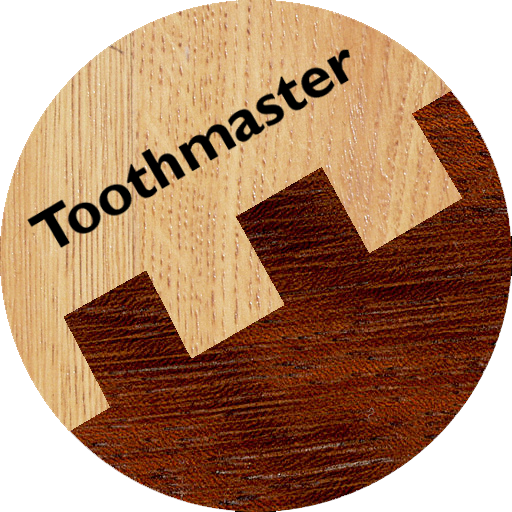

<ion-view cache-view="false">
  <ion-nav-title>
    Test async 
  </ion-nav-title>
  <ion-content>
    <button
      class="button button-small button-calm button-log"
      ng-click="async.runAsync()"
      >
      Run async test
    </button>

    <button
      class="button button-calm"
      ng-click="async.asyncFunction()"
    >
      Run asyncFunc
    </button>
  </ion-content>
</ion-view>
